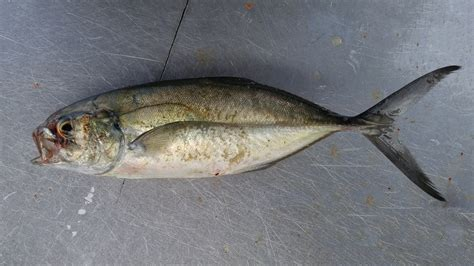

Caranx crysos (Κοκάλι)

Το κοκάλι (Caranx crysos, blue runner) είναι κοπαδιάρικο ψάρι της οικογένειας Carangidae, που απαντάται και στη Μεσόγειο και μοιάζει αρκετά με μικρό μαγιάτικο.
Μορφολογία
Έχει επιμηκές, σχετικά ψηλό σώμα με μυτερό ρύγχος, μεγάλο μάτι και διχαλωτή ουρά, χαρακτηριστική για γρήγορη, συνεχή κολύμβηση. Το μήκος του φτάνει συνήθως 25–40 cm αλλά μπορεί να ξεπεράσει τα 50 cm, με γαλαζοπράσινη ράχη και ασημί πλευρές που συχνά παρουσιάζουν ελαφριές κηλίδες ή ανταύγειες.
Πού το συναντάμε
Το κοκάλι ζει σε θαλάσσια και υφάλμυρα νερά του Ατλαντικού και της δυτικής Μεσογείου, συνήθως σε βάθη 0–100 m κοντά στις ακτές. Σχηματίζει κοπάδια σε παράκτιες περιοχές, λιμνοθάλασσες και εκβολές, ενώ τα νεαρά άτομα συνδέονται συχνά με επιπλέοντα φύκια (Sargassum) που τους προσφέρουν κάλυψη και τροφή.
Διατροφή
Το είδος είναι κυρίως ιχθυοφάγο, με το μεγαλύτερο μέρος της δίαιτάς του να αποτελείται από μικρά οστεώδη ψάρια όπως αντζούγιες και άλλα κοπαδιάρικα είδη. Συμπληρωματικά τρέφεται με καρκινοειδή βενθού και πλαγκτόν (καβούρια, γαρίδες, κωπήποδα) και περιστασιακά με μαλάκια και ζελατινώδη οργανισμούς.
Συνθήκες εκτροφής
Η εκτροφή Caranx crysos δεν είναι ακόμη διαδεδομένη, αλλά πειραματικές μελέτες σε θαλάσσιους κλωβούς έδειξαν ότι τα νεαρά άτομα μπορούν να παρουσιάσουν πολύ ικανοποιητική ανάπτυξη σε θερμοκρασίες περίπου 19–21 °C με τάισμα φρέσκων ψαριών (π.χ. σαρδέλες). Οι έρευνες προτείνουν ότι το είδος έχει προοπτική για ιχθυοκαλλιέργεια, εφόσον εξασφαλιστούν κατάλληλη θερμοκρασία, καλή οξυγόνωση, αρκετός χώρος κολύμβησης και βελτιστοποιημένες συνθέσεις τροφών.